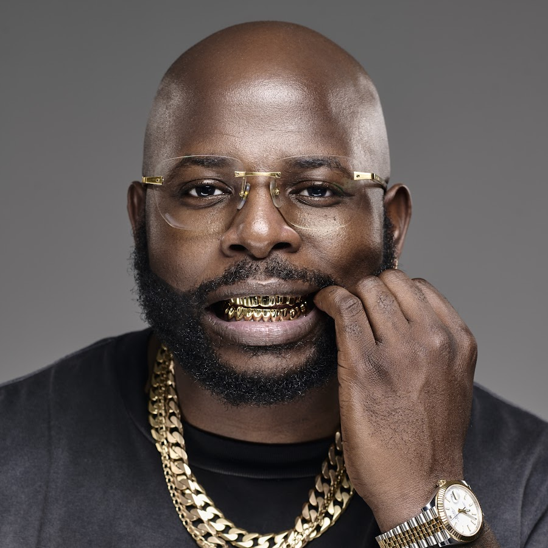

.png)

DJ Maphorisa is a South African DJ, record producer, and songwriter born Themba Sekowe on November
15, 1987, in Soshanguve. He is known for his major influence on Afrobeat, house music, and especially amapiano,
where he became one of the genre’s most important pioneers. Maphorisa first gained recognition as part of
the duo Uhuru, which produced hit songs blending house and kwaito sounds, and he later
expanded his career
by working internationally with artists such as Drake on the song “One Dance,”
which became a global success.
As his career grew, DJ Maphorisa became a key
figure in shaping modern South African music, especially through
his collaborations in amapiano.
He formed the popular duo Scorpion Kings with Kabza De Small, releasing hit projects
that helped
push amapiano into mainstream global recognition. Known for his versatility, production skills, and ability
to blend different genres, DJ Maphorisa continues to be one of the most influential
producers in Africa, with a lasting
impact on both local and international music scenes.